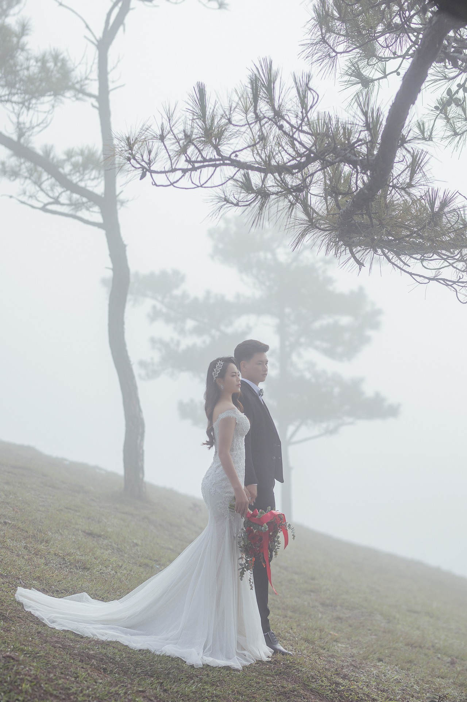
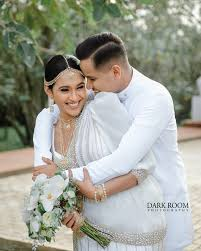
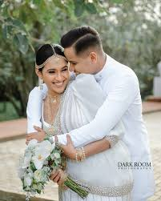
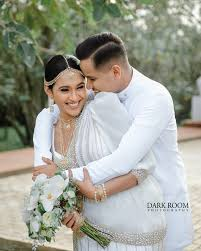

wedding photos
People feel good in front of the camera only when you learn to help them feel comfortable being there! It is about infusing them with your passion and educating them about how much they will enjoy the process.

 


Preeshoots
The pre-Wedding shoot takes place just before the marriage. It is a short and sweet session of photography with the wedding photographer. The most crucial aim of the shoot is to face the camera, pose in front of the photographer, and get a beautiful, romantic, and heart-breath collection of photos well before your wedding. Today, we will see some Pre-Wedding to make your pre-wedding more special.